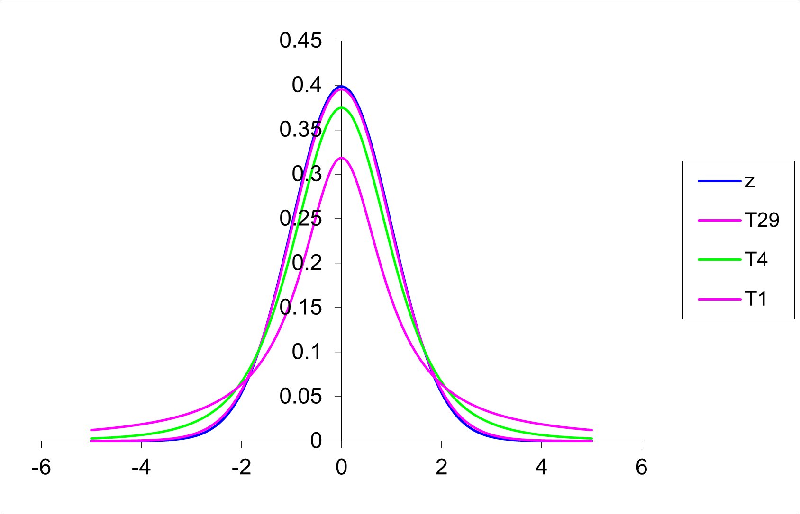

qnorm(0.025)One-sample \(t\)-test
Confidence intervals for \(\mu\)
Confidence intervals (CI) are also known as “confidence limits”. Most commonly we generate a confidence interval (CI) for \(\mu\) (the population mean) but you may also see CI’s for the population variance \(\sigma\), or for the population probability \(p\) in literature.
A confidence interval consists of two values (an upper and a lower limit). It is generally written as the two values separated by a comma within brackets e.g. (3.3, 4.1), with the lower value on the left, and the upper value on the right. We must specify a degree of likelihood or confidence that the population mean \(\mu\) is located in this interval. To be more confident that the interval includes \(\mu\), the width of the interval must be increased e.g. 99% CI. The most commonly chosen level or confidence is 95%, but you will also see 90% and 99% CI’s in literature.
Confidence interval for \(\mu\) (when \(\sigma\) is known and data is normally distributed)
(From Glover & Mitchell, 2002.) The sample mean \(\bar y\) is an unbiased estimator of the population mean \(\mu\). \(\bar y\)’s are not all the same due to sampling variability. Their scatter depends on both the variability of the y’s, measured by \(\sigma\), and the sample size \(n\). Recall that the standard error of the mean is \(\sqrt{\frac{\sigma^2}{n}}\) and we also know that the random variable \(\frac{\bar y -\mu}{\sqrt{\frac{\sigma^2}{n}}}\) is distributed as the standard normal or the Z distribution.
EXAMPLE
For the sampling distribution of this Z variable, consider what two values of capture the middle 95% of the distribution? That is, for \(P(a \le Z \le b) = 0.95\), what are a and b?
- If \(P(Z \le a) = 0.025\), then looking up 0.025 in R or the body of the standard normal table we find \(a \approx -1.960\).
- If \(P(Z \le b) = 0.975\) then looking up 0.975 in R or the body of the standard normal table we find \(b \approx 1.960\).
qnorm(0.725)So \(P(-1.960 \le Z \le 1.960) = 0.95\), or the values ± 1.960 capture the middle 95% of the Z distribution.
Therefore we capture the middle 95% of the \(\bar y\)’s if
\(P\left(-1.960 \leq \frac{\bar{X} - \mu}{\frac{\sigma}{\sqrt{n}}} \leq 1.960\right) = 0.95\)
\(\leftrightarrow P\left(-1.960 \frac{\sigma}{\sqrt{n}} \leq \bar{X} - \mu \leq 1.960 \frac{\sigma}{\sqrt{n}}\right) = 0.95\)
\(\leftrightarrow P\left(\bar{X} -1.960 \frac{\sigma}{\sqrt{n}} \leq \mu \leq \bar{X} +1.960 \frac{\sigma}{\sqrt{n}}\right) = 0.95\)
\(\leftrightarrow P\left(\bar{X} -1.960 \frac{\sigma}{\sqrt{n}} \leq \mu \leq \bar{X} +1.960 \frac{\sigma}{\sqrt{n}}\right) = 0.95\)
From the final equation above, we can say that the probability that the sample mean will differ by no more than 1.960 standard errors \(\sqrt{\frac{\sigma^2}{n}}\) from the population mean \(\mu\) is 0.95.
More commonly the equation for a CI is given as
\(\text{95 % CI} = \bar{y} \pm z_{0.025} \times s.e.\)
where \(z^{0.025}\) is a critical value from the standard normal distribution (also known as the z distribution). 2.5% of data lies to the right of \(z^{0.025}\). Equivalently, 97.5% of data lies to the left of \(z^{0.025}\). To find this value, you would look up a cumulative probability of 0.975 in the standard normal table or use the formula =NORMINV(0.975,0,1) to find it in Excel. As we have seen above in R we can use the function qnorm(0.975)
qnorm(0.975)For 90% or 99% confidence intervals, the only element of the CI formula that changes is the z critical value that is being used. So a \(\text{95 % CI} = \bar{y} \pm z_{0.05} \times s.e.\) and a \(\text{99 % CI} = \bar{y} \pm z_{0.01} \times s.e.\)
### Interpreting the Confidence Interval for \(\mu\)
\(\bar y\) is a random variable with a sampling distribution. Because there is an infinite number of values of \(\bar{y}\), there is an infinite number of intervals of the form \(\bar{y} \pm 1.96\frac{\sigma}{\sqrt{n}}\). The probability statement says that 95% of these intervals will actually include \(\mu\) between the limits. For any one interval, \(\bar{y} \pm 1.96\frac{\sigma}{\sqrt{n}}\), we say that we are 95% confident that \(\mu\) lies between these limits.
EXAMPLE
The following data shows the concentration of a toxic substance was measured in six ‘samples’ of effluent output. The readings were:
0.48 0.25 0.29 0.51 0.49 0.40
The mean for these six values is \(\bar y=0.403\) \(\mu g/L\). Let’s assume that the concentration of this toxic substance follows a normal distribution and that \(\sigma = 0.1\) \(\mu g/L\). These assumptions allow us to calculate a 95% z-based confidence interval:
\(\bar{y} \pm z^{0.025}\frac{\sigma}{\sqrt{n}}\)
where \(z^{0.025} = 1.96\) is the upper 2.5% point of the standard normal distribution.
So the 95% CI for the current example is
\(0.403 \pm 1.96 \times \sqrt{\frac{0.1}{6}} = 0.403 \pm 0.080 = (0.323, 0.483)\)
We can say that we are 95% confident that the (population) mean concentration is somewhere in the range 0.323 to 0.483 \(\mu g/L\), although the best single estimate is 0.403 \(\mu g/L\).
y <- c(0.48, 0.25, 0.29, 0.51, 0.49, 0.40)
n <- length(y)
mu <- mean(y)
sigma <- 0.1
se <- sigma/sqrt(n)
z <- qnorm(0.975)
ci <- mu + c(-1,1)*z*se
ciConfidence interval for \(\mu\) (when \(\sigma\) is NOT known and data is normally distributed)
There are very few times in a real world situation when you would know \(\sigma\) and not know \(\mu\), so a z-based CI is very rarely used in practice. The more likely real-world situation would be that we take a sample from a population with unknown shape, mean, and standard deviation. From this sample we calculate \(\bar y\) and \(s\). By the Central Limit Theorem, we assume \(\bar y\)’s sampling distribution is approximately normal. We can now use \(\frac{s}{\sqrt{n}}\), the sample standard error, as our estimate of \(\frac{\sigma}{\sqrt{n}}\), the population standard error. When \(\frac{s}{\sqrt{n}}\) replaces \(\frac{\sigma}{\sqrt{n}}\) in the formula \(\frac{\bar y - \mu }{\frac{\sigma}{\sqrt{n}}}\), we have \(\frac{\bar y - \mu }{\frac{s}{\sqrt{n}}}\).
While the distribution of \(\frac{\bar y - \mu }{\frac{\sigma}{\sqrt{n}}}\) is known to be the standard normal distribution or Z distribution, replacing \(\sigma\) with \(s\) will generate a different sampling distribution. This distribution is called the T distribution. (It is sometimes called the Student’s T distribution). A man named W.S. Gosset first published this sampling distribution in 1908.
Student’s T Distribution
The T-distribution has the following properties:
- It is bell-shaped, symmetrical about the mean, median and mode, which are all of equal value. [It is a little flatter than the normal distribution.]
- The area under the curve = 1, as is the case for all continuous probability distributions.
- The probability density function is defined by three parameters, the mean \(\mu\), the standard deviation \(\sigma\) and the sample size \(n\). Note that the shape of the t distribution depends on the sample size, unlike that of the normal distribution (which only depends on \(\mu\) and \(\sigma\)).
- The exact shape of the t distribution depends on the quantity called degrees of freedom, \(df\). The \(df = n – 1\) for any t distribution.
- It approximates normality as \(n \rightarrow \infty\). The approximation is reasonably good for \(n > 30\) and can be regarded as exact for \(n > 120\). You can see in Figure 5.1 (below) that for low sample sizes (and therefore small df) the T distribution is more spread out and flatter than the normal distribution. However, as the sample size (and df) increases the T curve becomes virtually indistinguishable from the Z e.g. T49 curve in Figure 8.1 where the degrees of freedom is 49.
If you look at the “old school” t-tables, you will note that the T table is presented differently to the tables you have encountered before for the binomial, Poisson and normal distribution. Here the values in the body of the table are critical values from the T distribution rather than cumulative probabilities (as was the case for the tables for the other distributions). The same information is still available, just in a more restricted format.

T-Based Confidence Interval
The general formula for a CI for \(\mu\) when \(\sigma\) is not known is
\(\text{95 % CI} = \bar{y} \pm t^{\alpha/2}_{n-1} \times s.e.(\bar y)\)
Here \(\alpha\) is the level of significance (or the probability of being incorrect in our estimation that we are willing to bear). For a 95% confidence interval, the corresponding level of significance is 5% (usually expressed in decimal format as 0.05). Also \(n-1\) is the degrees of freedom. For example, the critical value \(t^{\alpha/2}_{n-1}\) (or more simply t^{0.025}_{24}) is equal to 2.064.
qt(0.025, 24)
qt(0.975, 24)Note that s.e., s.e.(\(\bar y\)) and s.e.m. are all equivalent expressions for the standard error of the mean. You will see them used interchangeably among scientists and the literature they write. Remember that the s.e. in the more common case when \(\sigma\) is unknown is calculated as \(\frac{s}{\sqrt(n)}\).
What is meant by confidence interval?
If an experiment were to be repeated many times, on average, 95% of all 95% confidence intervals would include the true mean, \(\mu\).
The following graph shows 100 confidence intervals produced from computer simulated data. The simulated data are 100 studies, each containing n = 6 observations of a fictitious toxic substance concentration (\(\mu g/L\)) assumed to be \(N(0.3, 0.1^2)\).
For each computer generated “sample”, the sample mean \(\mu\) and standard deviation (s) are calculated, then the 95% confidence interval calculated \(\bar{y} \pm t^{\alpha/2}_{n-1} \times \sqrt{s^2/n}\) .
Approximately 95% of these simulated samples have a confidence interval that includes the true value of 0.3 \(\mu g/L\). In the graph above, a confidence interval includes the true mean value of 0.3 if the vertical line (representing the width of the CI) crosses the horizontal line.
However in practice, when we calculate a CI from a single sample of data, we do not know if it is a confidence that includes \(\mu\), but we are 95% confident that it does! 99% confidence intervals would be wider and more likely to include \(\mu\), so it seems more logical to opt for the widest confidence interval possible. However, as we will learn in the next Section, there are opposing errors that are introduced when we make \(\alpha\) small i.e. when we make the CI wide.
Data Transformation and the Lognormal Distribution
As you know, data are not always normally distributed. However, the most common statistical techniques assume normality of data. In situations where you wish to use one of these techniques (and the data are not normally distributed) a “transformation” is required.
The most common transformation in environmental modelling is the logarithm (to base 10 or base e). Other common transformations include the square root and arcsine (or angular) transformations.
The process of transformation is that each of the data values has the same mathematical function applied to them. For example,
Square root: \(y`=\sqrt{y}\) or \(y`=\sqrt{y+ \frac{1}{2}}\)
Logarithmic: \(y`=\log_e y\) or \(y`=\log_e (y+1)\)
Arcsine (angular) for a percentage \(p(0 <p < 100)\):
\(x = (180/\pi) \times \arcsin(\sqrt{p/100})\)
The log transformation is often used in growth studies involving a continuous variable such as length or weight. This transformation is also useful in ecological studies involving counts of individuals when the variance of the sample count data is larger than the mean. If the sample data contain the value zero, then a modification to the \(\log(x)\) transformation is the \(\log (x+1)\) transformation. This transformation eliminates the mathematical difficulty that the logarithm of 0 is undefined. The square root transformation is useful when the variance of the sample data is approximately equal to the sample mean. The arcsine transformation is appropriate for data which are expressed as proportions.
After the data has been transformed, all subsequent analyses take place on the transformed scale. Results may be back-transformed to original scale.
The following examples show how to select the optimum transformation of data.
Example 1: Number of blood cells observed in 400 areas on a microscope slide (haemocytometer) (Fisher, 1990 p56)
| Number of blood cells: | 0 | 1 | 2 | 3 | 4 | 5 | 6 | 7 | 8 | 9 | 10 | 11 |
|---|---|---|---|---|---|---|---|---|---|---|---|---|
| Frequency: | 0 | 20 | 43 | 53 | 86 | 70 | 54 | 37 | 18 | 10 | 5 | 2 |
Question: Can we assume this data follows a normal distribution?
#q: use ggplot to draw histogram, boxplot and qqnormal plot of the data
library(ggplot2)
library(gridExtra)
bcc_df <- read.csv("BloodCellCount.csv")
p1 <- ggplot(bcc_df, aes(BloodCellCount)) +
geom_histogram(bins = 12) +
labs(title="Histogram of blood cell counts", x="Number of blood cells", y="Frequency")
p2 <- ggplot(bcc_df, aes(BloodCellCount)) +
geom_boxplot() +
labs(title="Boxplot of blood cell counts", x="Number of blood cells", y="")
p3 <- ggplot(bcc_df, aes(sample=BloodCellCount)) +
stat_qq() +
stat_qq_line() +
labs(title="QQ plot of blood cells", x="Theoretical quantiles", y="Sample quantiles")
grid.arrange(p1, p2, p3, ncol=2)library(moments)
skewness(bcc_df$BloodCellCount)
kurtosis(bcc_df$BloodCellCount)shapiro.test(bcc_df$BloodCellCount)Observations:
- This is count data. From statistical theory, we don’t expect this data to follow a normal distribution (since it is discrete data, and the normal distribution is continuous).
- The histogram and boxplot show that the data has a long tail to the right (appears positively skewed).
- The skewness and kurtosis values differ from zero.
- The formal normality test indicates that the null hypothesis of the data following a normal distribution should be rejected.
Conclusion:
- We cannot assume this data follows a normal distribution. Distribution is POSITIVELY skewed.
Question: Is there any transformation we can perform (that is fit a mathematical function to the data) where the data (on the transformed scale) will approximately follow a normal distribution?
A. Square Root Transformation
bcc_df$sqrt_BloodCellCount <- sqrt(bcc_df$BloodCellCount)
p1 <- ggplot(bcc_df, aes(sqrt_BloodCellCount)) +
geom_histogram(bins = 12) +
labs(title="Histogram of blood cell counts", x="Transformed Number of blood cells", y="Frequency")
p2 <- ggplot(bcc_df, aes(sqrt_BloodCellCount)) +
geom_boxplot() +
labs(title="Boxplot of blood cell counts", x="Transformed Number of blood cells", y="")
p3 <- ggplot(bcc_df, aes(sample=sqrt_BloodCellCount)) +
stat_qq() +
stat_qq_line() +
labs(title="QQ plot of blood cells", x="Theoretical quantiles", y="Sample quantiles")
grid.arrange(p1, p2, p3, ncol=2)library(moments)
skewness(bcc_df$sqrt_BloodCellCount)
kurtosis(bcc_df$sqrt_BloodCellCount)shapiro.test(bcc_df$sqrt_BloodCellCount)In spite of the fact that the Shapiro Wilks test shows this distribution is significantly different to normal the normal probability plot shows a sufficiently linear match and the histogram appears symmetric. The distribution is symmetric, transformation successful.The test is significant, but the Q-Q plot and histogram look good. The skewness and kurtosis values are close to zero.
Note: The Shapiro Wilks Test is very sensitive to large sample sizes, i.e. n > 50. In this case we use the Q-Q plot and histogram to assess normality.
A. Log Transformation
bcc_df$log_BloodCellCount <- log(bcc_df$BloodCellCount)
p1 <- ggplot(bcc_df, aes(log_BloodCellCount)) +
geom_histogram(bins = 12) +
labs(title="Histogram of blood cell counts", x="Transformed Number of blood cells", y="Frequency")
p2 <- ggplot(bcc_df, aes(log_BloodCellCount)) +
geom_boxplot() +
labs(title="Boxplot of blood cell counts", x="Transformed Number of blood cells", y="")
p3 <- ggplot(bcc_df, aes(sample=log_BloodCellCount)) +
stat_qq() +
stat_qq_line() +
labs(title="QQ plot of blood cells", x="Theoretical quantiles", y="Sample quantiles")
grid.arrange(p1, p2, p3, ncol=2)library(moments)
skewness(bcc_df$log_BloodCellCount)
kurtosis(bcc_df$log_BloodCellCount)shapiro.test(bcc_df$log_BloodCellCount)Transformation is TOO STRONG - outlier(s) on left hand tail.
Example 2: Tetrachlorobenzene levels (TcCB, ppb) in 100 soil samples
Note: We have seen previously that the distribution of this data is HIGHLY POSITIVELY skewed. Data is stored in the file TcCB.csv.
A. Square root transformation
tccb_df <- read.csv("TcCB.csv")
tccb_df$sqrt_TcCB_ppb <- sqrt(tccb_df$TcCB_ppb)
p1 <- ggplot(tccb_df, aes(sqrt_TcCB_ppb)) +
geom_histogram(bins = 12) +
labs(title="Histogram of TcCB concentration (ppb)", x="Transformed TcCB", y="Frequency")
p2 <- ggplot(tccb_df, aes(sqrt_TcCB_ppb)) +
geom_boxplot() +
labs(title="Boxplot of TcCB concentration (ppb)", x="Transformed TcCB", y="")
p3 <- ggplot(tccb_df, aes(sample=sqrt_TcCB_ppb)) +
stat_qq() +
stat_qq_line() +
labs(title="QQ plot of TcCB concentration (ppb)", x="Theoretical quantiles", y="Sample quantiles")
grid.arrange(p1, p2, p3, ncol=2)library(moments)
skewness(tccb_df$sqrt_TcCB_ppb)
kurtosis(tccb_df$sqrt_TcCB_ppb)shapiro.test(tccb_df$sqrt_TcCB_ppb)Transformation not powerful enough - still Positively Skewed
A. Log transformation
tccb_df$log_TcCB_ppb <- log(tccb_df$TcCB_ppb)
p1 <- ggplot(tccb_df, aes(log_TcCB_ppb)) +
geom_histogram(bins = 12) +
labs(title="Histogram of TcCB concentration (ppb)", x="Transformed TcCB", y="Frequency")
p2 <- ggplot(tccb_df, aes(log_TcCB_ppb)) +
geom_boxplot() +
labs(title="Boxplot of TcCB concentration (ppb)", x="Transformed TcCB", y="")
p3 <- ggplot(tccb_df, aes(sample=log_TcCB_ppb)) +
stat_qq() +
stat_qq_line() +
labs(title="QQ plot of TcCB concentration (ppb)", x="Theoretical quantiles", y="Sample quantiles")
grid.arrange(p1, p2, p3, ncol=2)library(moments)
skewness(tccb_df$log_TcCB_ppb)
kurtosis(tccb_df$log_TcCB_ppb)shapiro.test(tccb_df$log_TcCB_ppb)Transformation successful - symmetric distribution
The Natural Log (\(\log_e\)) Transformation
Continuing on from Example 2 where the transformation chosen is \(log_e\), we see that the normal probability plot is approximately linear and all test statistics (for the normality tests) are lower than their corresponding critical values, so we can assume the log-transformed data are normally distributed. (Or equivalently that the original data are log-normally distributed.)
On the log scale, the mean is –0.598. So the back-transformed mean is \(e^{–0.598} = 0.550\) ppb.
When a log-transformation is used, the back-transformed mean is known as the geometric mean (as opposed to the ordinary arithmetic mean). This measure is commonly used in describing environmental data, as in many cases data are highly positively skewed. Like the median, the geometric mean is less sensitive (or more robust) to these outlying values.
Note that the geometric mean is usually defined as
\(GM = \left( y_1 \times y_2 \times \ldots \times y_n \right)^{\frac{1}{n}} = \left( \prod_{i=1}^{n} y_i \right)^{\frac{1}{n}}\)
which is the same as \(\exp(\bar {y`})\) where \(\bar{y}^{\prime} = \frac{1}{n} \sum_{i=1}^{n} y_i^{\prime}\) and \(y_i^{\prime} = \log y_i\).
This can be shown for a simple case involving n = 3 observations:
\(\exp(\bar {y^{\prime}}) = \exp\left[\frac{1}{3}(y^{\prime}_1 + y^{\prime}_2 + y^{\prime}_3)\right]\)
\(\exp\left[\frac{1}{3}(\log y_1 + \log y_2 + \log y_3)\right]\) \(y^{\prime}_i = \log y_i\)
\(\left[\exp(\log y_1 + \log y_2 + \log y_3)\right]^{\frac{1}{3}}\) \(e^{ab}=(e^a)^b = (e^b)^a\)
\(\left[\exp(\log y_1) \times \exp(\log y_2) \times \exp(\log y_3)\right]^{\frac{1}{3}}\) \(e^{a+b} = e^a \times e^b\)
\(\left[y_1 \times y_2 \times y_3\right]^{\frac{1}{3}} = \sqrt[3]{y_1 \times y_2 \times y_3}\) \(e^{\log a} = a\) \(= GM\)
Just as the geometric mean is calculated as \(\exp(\bar {y^{\prime}})\), some books refer to \(exp(s^{\prime})\) as the geometric standard deviation, where \(s^{\prime}\) is the standard deviation of the \(y_i^{\prime} = \log y_i\). However, this is not a very useful concept, so it won’t be used here.
Since we have concluded log TcCB has a normal distribution, then TcCB has a lognormal distribution. If a variable log \(y = y{\prime}\) has a normal \(N(\mu,\sigma^2)\) distribution, then the original variable has a lognormal distribution with parameters \(\mu\) and \(\sigma^2\), \(y \sim LN(\mu,\sigma^2)\). Note that \(\mu\) and \(\sigma^2\) are the parameters for the log variable. It can be shown (no proof here) the mean and variance for the lognormal \(y \sim LN(\mu,\sigma^2)\). distribution are
- Mean = \(exp(\mu+1/2\sigma^2)\)
- Variance = \(exp(2\mu+\sigma^2)[exp(\sigma^2)-1]\)
We can illustrate these relationships by using the parameter estimates \(\hat \mu=-0.598\) and \(\hat \sigma=1.362\) from the log TcCB data to produce the following fitted normal distributions and lognormal distributions are obtained:
Also, using these parameter estimates, the mean and variance of the lognormal distribution are
- Mean = \(exp(-0.598+1/2\times 1.362^2)=1.390\) ppb
- Variance = \(exp(2\times -0.598+1.362^2)[exp(1.362^2)-1]=10.442\) ppb
- Std. Dev = \(\sqrt{\text{variance}} = \sqrt{10.422} = 3.228\) ppb,
where -0.598 is the average of the logged data and 1.363 is the standard deviation of the logged data.
Note the similarity of these to the sample mean (1.412) and sample standard deviation (3.098) of the raw TcCB data.
Hypothesis testing
Sometimes research questions are framed not as “What is a plausible range of values for such and such a parameter?” but rather “Are the data consistent with this particular value for the parameter?”. A hypothesis test is a test of such a hypothesised value. For example, we may simply wish to test whether the population mean yield of wheat in a particular region is 2 tons per hectare or not.
Statistical hypothesis tests are based on research questions and hypotheses. Some examples of research questions are:
- Does an increased use of fertilisers of farms in a catchment area result in increased river pollution?
- How do different crop residue management systems affect the “health” of the soil?
- What effect will selective logging have on wildlife populations?
The diagram below also appears in Section 1. Here we see where statistical hypothesis testing fits into the research process at the point of statistical analysis.

Steps in Hypothesis Testing (via a Test Statistic)
- Choose the level of significance, \(\alpha\) (most commonly \(\alpha= 0.05\), but you will also see 0.01 and 0.10 mentioned regularly)
- Write the null and alternate hypotheses
- Check if the assumptions of the test hold (if they don’t - choose an appropriate transformation or choose another test!)
- Calculate the test statistic (& degrees of freedom if applicable)
- Obtain a P-value OR
- Obtain critical values
- Make a statistical conclusion by
- Comparing this P-value to your chosen level of significance (if \(P < \alpha\), then reject null hypothesis) OR
- Seeing if the test statistic lies with the rejection region
- Write a biological conclusion
One-Tailed and Two-Tailed Tests
Hypothesis tests about the population mean can take one of the three forms:
- \(H_0: \mu = c\) or \(H_1: \ne c\)
- \(H_0: \mu \ge c\) or \(H_1: \mu < c\)
- \(H_0: \mu \le c\) or \(H_1: \mu > c\)
where \(c\) is a real number chosen before the data are gathered. Each \(H_0\) above is tested with a test statistic, and the decision about \(H_0\) is based on how far this test statistics deviates from expectation under a true \(H_0\). If the test statistic exceeds the critical value(s), \(H_0\) is rejected. Alternatively, if the \(P\) value for the test statistic is smaller than the predetermined alpha level, \(H_0\) is rejected.
For any particular experiment only one of the sets of hypotheses is appropriate and can be tested. \(H_0\) and \(H_1\) are predictions that follow naturally from the question posed and the result anticipated by the researcher. Also, hypotheses contain only parameters (Greek letters) and claimed values, never numbers that come from the sample itself. \(H_0\) always contains the equal sign and is the hypothesis that is examined by the test statistic.
Generally a) is the form of hypothesis test that we employ. Options b) or c) are used occasionally when we have evidence (quite independent of the data we have collected) to believe that the difference of the hypothesized value from the true population mean, if any, is in one direction only. Note that a one tailed test is NOT appropriate simply because the difference between the samples is clearly in one direction or the other.
Type I and Type II Errors
A Type I error (false positive) is made when we reject the null hypothesis when it is true. We might for example declare that a population mean is different from hypothesized value when, in fact, they are not. Equally we may err in the other direction, that is, we may accept a null hypothesis when it is false. We might, for example, fail to detect a difference between the population mean and a hypothesized value. In doing so, we make a Type II error (false negative). The definitions of each of these two errors is summarised in the table below.
Because , the level of significance, is chosen by the experimenter, it is under the control of the experimenter and it is known. When you reject and \(H_0\), therefore, you know the probability of an error (Type I). If you accept an \(H_0\) it is much more difficult to ascertain the probability of an error (Type II). This is because Type II errors depend on many factors, some of which may be unknown to the experimenter. So the rejection of \(H_0\) leads to the more satisfying situation because the probability of a mistake is easily quantifiable.
You may think that if the level of significance is the probability of a Type I error and is under our control, why not make the level of significance (\(\alpha\) level) very small to eliminate or reduce Type I errors? Why not use 1 in 100 or 1 in 1000? Sometimes we may wish to do that (e.g. in human medical trials), but reduction of the \(\alpha\) level (Type I error) always increases the probability of a Type II error.
You can read more about this in Chapter 5 of Glover & Mitchell (2008) or Chapter 5 of Clewer & Scarisbrick (2013).
Glover, T. and Mitchell, K., 2008. An introduction to biostatistics. Waveland Press.
Clewer, A.G. and Scarisbrick, D.H., 2013. Practical statistics and experimental design for plant and crop science. John Wiley & Sons.
Power of the Test
Ideally, a test of significance should reject the null hypothesis when it is false. Power is the probability of rejecting \(H_0\) when \(H_0\) is false, \(1-\beta\). A test becomes more powerful as the available data increases.
You’ll do more on this topic (including planning experiments and interpreting statistical differences in light of biological importance NEXT YEAR).
One-Sample z-Tests
Introductory Example
The liquid effluent from a chemical manufacturing plant is to be evaluated. The plant operators claim the mean concentration of a specific toxic substance is 0.3 \(\mu g/l\).
Let y = toxic substance concentration (\(\mu g/l\)). Assume data are normally distributed: \(y \sim N(\mu, \sigma^2)\). Suppose (for the time being) we have prior information on the variability of similar operating plants, and can assume that \(\sigma = 0.1\) \(\mu g/l\). Assume that the claim is true, i.e. (population) mean is \(\mu g/l\).
Scenario A
To test this claim, a single sample of effluent discharge was taken and found to be 0.4 \(\mu g/l\). Does the data support their claim?
We want to see how likely it is to get an observation of 0.4 \(\mu g/l\), or something even more extreme. By more extreme, we mean > 0.4 \(\mu g/l\), or < 0.2 \(\mu g/l\) (i.e. more than 0.1 \(\mu g/l\) away from \(\mu = 0.3\), in either direction). This probability is represented in the sketch below.
library(ggplot2)
ggplot(data.frame(x = c(0.3-4*0.1, 0.3+4*0.1)), aes(x = x)) +
stat_function(fun = dnorm, args = list(mean = 0.3, sd = 0.1), geom = "area", fill = "white") +
stat_function(fun = dnorm, args = list(mean = 0.3, sd=0.1),
xlim = c(0.3-4*0.1, 0.2), geom = "area",
fill = "black") +
stat_function(fun = dnorm, args = list(mean = 0.3, sd=0.1),
xlim = c(0.3+4*0.1, 0.4), geom = "area",
fill = "black") +
xlab("x") +
ylab(expression(N(0.3,0.1^2)~pdf)) +
scale_x_continuous(breaks = c(0.2, 0.4))So the probability of this event is
\(P(Y<0.2 \text{ or } Y>0.4)\) \(=\left( Z<\frac{0.2-0.3}{0.1} \text{ or } Z>\frac{0.4-0.3}{0.1} \right)\) \(=P(Z<-1 \text{ or } Z>1)\) \(=2 \times P(Z<-1)\) \(=2 \times 0.1587 = 0.3174\)
This is a large probability (\(\approx\) 1 in 3), so obtaining a value of 0.4 \(\mu g/l\) is not inconsistent with \(\mu = 0.3\) \(\mu g/l\). There is no reason to reject the hypothesis that the (population) mean is \(\mu = 0.3\) \(\mu g/l\).
Scenario B
Suppose now that the toxic substance concentration was 0.5 \(\mu g/l\). What is the conclusion now?
We now need the probability of > 0.5 \(\mu g/l\), or < 0.1 \(\mu g/l\). This is represented in the sketch below.
library(ggplot2)
ggplot(data.frame(x = c(0.3-4*0.1, 0.3+4*0.1)), aes(x = x)) +
stat_function(fun = dnorm, args = list(mean = 0.3, sd = 0.1), geom = "area", fill = "white") +
stat_function(fun = dnorm, args = list(mean = 0.3, sd=0.1),
xlim = c(0.3-4*0.1, 0.1), geom = "area",
fill = "black") +
stat_function(fun = dnorm, args = list(mean = 0.3, sd=0.1),
xlim = c(0.3+4*0.1, 0.5), geom = "area",
fill = "black") +
xlab("x") +
ylab(expression(N(0.3,0.1^2)~pdf)) +
scale_x_continuous(breaks = c(0.1, 0.5))So the probability of this event is
\(P(Y<0.1 \text{ or } Y>0.5)\) \(=\left( Z<\frac{0.1-0.3}{0.1} \text{ or } Z>\frac{0.5-0.3}{0.1} \right)\) \(=P(Z<-2 \text{ or } Z>2)\) \(=2 \times P(Z<-2)\) \(=2 \times 0.0228 = 0.0456\)
This is small (less than 1 in 20), so obtaining a concentration of 0.5 \(\mu g/l\) is unlikely, if \(\mu = 0.3\) \(\mu g/l\).
So we reject the hypothesis that \(\mu = 0.5\) \(\mu g/l\) and conclude that the (population) mean is significantly higher than 0.3 \(\mu g/l\).
HOWEVER, in reality you would NOT make a recommendation based on this conclusion as it is based on a single value! You want to base your decision on a much larger sample.
Scenario C
Continuing the liquid effluent example, recall the plant operators claim the mean concentration of a specific toxic substance is 0.3 \(\mu g/l\). Now let’s say that to test this claim, six effluent discharge samples were taken at randomly chosen times and the resultant readings were 0.48 0.25 0.29 0.51 0.49 0.40. Does the data support their claim?
Let y = toxic substance concentration (\(\mu g/l\)). Assume data are normally distributed: \(y \sim N(\mu, \sigma^2)\). Suppose (for the time being) we have prior information on the variability of similar operating plants, and can assume that \(\sigma = 0.1\) \(\mu g/l\). As we know the population standard deviation, \(\sigma\), we will use a z-test.
Null hypothesis: \(H_0: \mu = 0.3\) \(\mu g/l\) Alternate hypothesis: \(H_1: \mu \ne 0.3\) \(\mu g/l\) where \(\mu\) = mean toxic substance concentration
\(z=\frac{\bar{y}-\mu}{\sqrt{\sigma^2/n}}=\frac{\bar{y}-\mu}{se(\bar{y})}\)
Test Statistic, \(z=\frac{0.403-0.3}{\sqrt{0.1^2/6}}=2.53\)
Assuming that the null hypothesis is true (that \(\mu = 0.3\) \(\mu g/l\)), then z = 2.53 is an observation from a standard normal distribution.
We now calculate the probability of obtaining this z-value, or something more extreme. This is the P value of the test:
\(P=P(\bar{y} \le 0.197 \text{ or } \bar{y} \ge 0.403)\)
\(=P(Z \le -2.53 \text{ or } Z \ge 2.53)\) \(=2 \times P(Z \le -2.53)\) \(=2 \times 0.0057=0.011\)
2*pnorm(-2.53)If \(H_0\) is true, there is only a 1.1% chance of obtaining this value of or something more extreme. This is unlikely, so we reject the null hypothesis. Hence we conclude that the toxic substance concentration in the effluent has a mean significantly greater than 0.3 \(\mu g/l\).
General Notes on Hypothesis Testing
Often researchers choose their level of significance (\(\alpha\)) as 0.05. In that case…
- If \(P<0.05\) (less than 1 in 20) \(\Rightarrow\) reject \(H_0\)
- If \(P<0.05\) (more than 1 in 20) \(\Rightarrow\) retain \(H_0\)
If \(H_0\) is retained, this does not necessarily mean that \(H_0\) is true; the sample may be too small to detect a difference.
Even though \(H_0\) might be rejected, there is a small chance that this will be in error. If you use a 5% cut off rule, 5% of your conclusions will be wrong when \(H_0\) is true!
One-Sample t-Tests
Introductory Example
For the toxic substance concentration in effluent example (with the 6 readings), now we will not make any assumption about the variability (i.e. we assume we don’t know sigma). How would the analysis change?
As before the null and alternate hypotheses are, \(H_0: \mu = 0.3\) \(\mu g/l\) vs. \(H_1: \mu \ne 0.3\) \(\mu g/l\). From the data we calculate the sample mean and sample standard deviation to use in the construction of the test statistic, t. Here, \(\mu=0.403\) \(\mu g/l\) and \(s = 0.111\) \(\mu g/l\).
The test statistic, t, is calculated using the following formula:
\(t=\frac{\bar{y}-\mu}{\sqrt{s^2/n}}=\frac{\bar{y}-\mu}{se(\bar{y})}\)
and the associated degrees of freedom as follows: degrees of freedom, \(df = n-1\).
So in the current example,
\(t=\frac{0.403-0.3}{\sqrt{0.111^2/6}}=2.29\) and \(df=6-1=5\)
Assuming that the null hypothesis is true (that \(\mu = 0.3\) \(\mu g/l\)), then t = 2.29 is now an observation from a t distribution with \(n - 1 = 5\) degrees of freedom.
The P-value for this t-test is
\(P=P(\bar{y} \le 0.197 \text{ or } \bar{y} \ge 0.403)\)
\(=P(T_5 \le -2.29 \text{ or } T_5 \ge 2.29)\) \(=2 \times P(T_5 \le -2.29)\) \(=2 \times 0.035=0.071\)
We can look -2.29 up in the “old school” t-tables or we can use the pt function in R to calculate P.
2*pt(-2.29,5)This time, the P-value is greater than 0.05, so we cannot reject \(H_0\). We can say that the data are consistent with the mean concentration of the toxic substance being 0.3 \(\mu g/l\).
Rather than calculate the probabilities by hand, we can use R’s t.test command to run the test:
toxic <- c(0.48, 0.25, 0.29, 0.51, 0.49, 0.40)
t.test(toxic, mu = 0.3, alternative = "two.sided")From the output we can see that we can see that
t = 2.2891; df = 5; p-value = 0.07073
Our conclusion is as above.
General Notes on the T Distribution
The t distribution has “heavier” tails than the normal distribution.
As degrees of freedom \(\uparrow\), t \(\rightarrow\) normal distribution.
The P-value for the t-test is larger than that for the z-test \(\therefore\) the t-test is not as powerful. This is because some information must be used to estimate \(\sigma\).
Steps in Hypothesis Testing (via a Confidence Interval)
Hypothesis testing via a t-based confidence interval is an alternative to conducting a one-sample t-test (via test statistic, df, and P-value). The same assumptions apply as for a t-test.
- Write the null and alternate hypotheses.
- Check if the assumptions of the test hold.
- Calculate the confidence interval.
- Check whether the hypothesised value / mean lies within the confidence interval.
- Make a statistical conclusion. (If the hypothesized value / mean does not lie within the confidence interval, reject the null hypothesis.)
- Write a biological conclusion.
toxic <- c(0.48, 0.25, 0.29, 0.51, 0.49, 0.40)
t.test(toxic, mu = 0.3, alternative = "two.sided")We can see that the 95% confidence intervals are also provided in the R output above and that our hypothesised mean of 0.3 \(\mu g/l\) is contained within (between) the CI’s.
We conclude that the true mean toxic substance concentration does not differ significantly from 0.3 \(\mu g/l\), and that we are 95% confident that this unknown true mean value lies within the range 0.2873 to 0.5194 \(\mu g/l\).
Performing a hypothesis test using a 95% confidence interval is equivalent to performing a t-test with a 5% level of significance – the conclusions drawn will be the same. Similarly the conclusions from a 90% CI and a t-test with \(\mu = 0.10\) will be the same. Some journals prefer us to report the CI’s as they are more informative than the p-value alone. For example, the width of the CI’s says something about the precision of the estimate.
One-Sample t-Test with Data Transformation
Example
There is evidence that total nitrogen levels in the river – like many other environmental quality data – are lognormally distributed. Consequently, it is more convenient to work on the logarithmic scale. For example,
TN = log10[total nitrogen concentration]where the nitrogen concentration is measured in \(\mu g/l\). (Often scientists will find it more convenient to use the \(\log_{10}\) scale rather than \(\log_e\), but this is of no real consequence).
Data from 29 observations of Total Nitrogen levels in the Nepean River @ Wallacia downloaded using Water NSW water insights API and can be found in the data set TN_Wallacia.csv. We are interested to test whether total nitrogen concentration differs significantly from the preferred water quality target of 500 ppb (note that ppm and \(\mu g/l\) are equivalent). Nitrogen content would ideally be equal to or less than this target to reduce the risk of significant eutrophication.
Be sure to include the following elements in your statistical test:
- null and alternate hypotheses;
- consideration of the analysis assumptions;
- mean and confidence interval on the original measurement scale;
- biological conclusion of the test output including the confidence interval.
Solution
We wish to perform a one-sample t-test to test the null hypothesis \(H_0: \mu = 500\) \(\mu g/l\). However to do this we need to be able to assume the data follows a normal distribution. A quick summary of the raw data shows that the data is skewed to the right (see boxplot below, also the mean of 855.9 \(\mu g/l\) is greater than the median of 800 \(\mu g/l\)) and we also see the typical “smiley” shape of the points on the qq normal plot. We also find that the skewness value of 1.10 is positive and greater than one. The Shapiro-Wilks normality test indicates non-normality at the 5% significance level (as the p-value < 0.05).
tn <- read.csv("TN_Wallacia.csv")
summary(tn$TN)library(moments)
skewness(tn$TN)shapiro.test(tn$TN)ggplot(tn, aes(sample = TN)) +
stat_qq() + # This adds the QQ plot points
stat_qq_line() + # This adds the QQ line
ggtitle("Normal Q-Q Plot") +
theme_minimal()ggplot(tn, aes(x=TN)) +
geom_boxplot()Transform data
A log (base 10) transformation on the raw data was performed as suggested.
tn$log10_TN <- log10(tn$TN)
mean(tn$log10_TN)We can use the mean of this transformed data i.e. the mean transformed TN value (= 2.886528) to find the estimated geometric mean (GM) of the phosphorus levels. The \(GM = 10^2.886528 = 770.066\) \(\mu g/l\). This is an indication of a typical phosphorus reading. Note how this is lower than the arithmetic mean.
Recall from earlier that when a log-transformation is used, the back-transformed mean is known as the geometric mean (as opposed to the ordinary arithmetic mean). This measure is commonly used in describing environmental data, as in many cases data are highly positively skewed. Like the median, the geometric mean is less sensitive (or more robust) to these outlying values.
Again before proceeding with the t-test or obtaining a t-based CI, we need to perform a normal probability test on the log-transformed values, TP to test whether these log values can be assumed to follow a normal distribution.
ggplot(tn, aes(sample = log10_TN)) +
stat_qq() + # This adds the QQ plot points
stat_qq_line() + # This adds the QQ line
ggtitle("Normal Q-Q Plot") +
theme_minimal()shapiro.test(tn$log10_TN)Based on the qq-normal plot and the Shapiro Wilks test (p>0.05), we can assume that the transformation has been successful.
We perform the t test on the log scale (using the newly generated data) where our null and alternate hypotheses are in effect:
- \(H_0: \mu_A = log_{10} 500\) \(mg/l\)
- \(H_1: \mu_A \ne log_{10} 500\) \(mg/l\)
where \(\mu_A\) is the population arithmetic mean.
Hence the test statistic will be
\(t=\frac{\bar{y} \text{ (of log10 data)}-\log_{10}(500)}{s \text{ (of log10 data)}/\sqrt{n}}\) and \(df = n-1\).
Let’s test this in R
t.test(tn$log10_TN, mu = log10(500), alternative = "two.sided")The P-value of <0.001 indicates that we should reject \(H_0\). R also produces the CI (2.807748, 2.965309) with its t-test output. Confirming the rejection of \(H_0\) is the fact that the test mean of 2.69897 (\(log_{10}500\)) lies outside (and below) these confidence limits. Therefore we can conclude that the (population) geometric mean phosphorus concentration is significantly higher than 500 \(\mu g/l\) and is therefore exceeding the water quality target.
To obtain the 95% confidence interval for the geometric mean, we need to back transform both limits of the CI given by R (above) which are on the \(\log_{10}\) scale. The 95% CI for the mean TN is 2.807748 to 2.965309. So the 95% CI for the geometric mean phosphorus level is \(10^{2.807748}\) to \(10^{2.965309}\).
So the 95% CI for the geometric mean phosphorus level is 642.31 to 923.23 \(\mu g/l\). The best estimate of the true geometric mean is 770.066 \(\mu g/l\). However, the true value may be in the range 642.31 to 923.23 \(\mu g/l\) with 95% certainty.